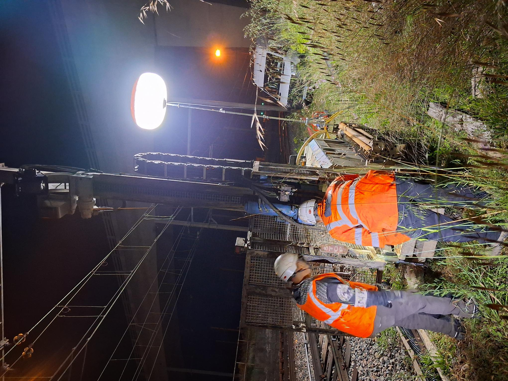
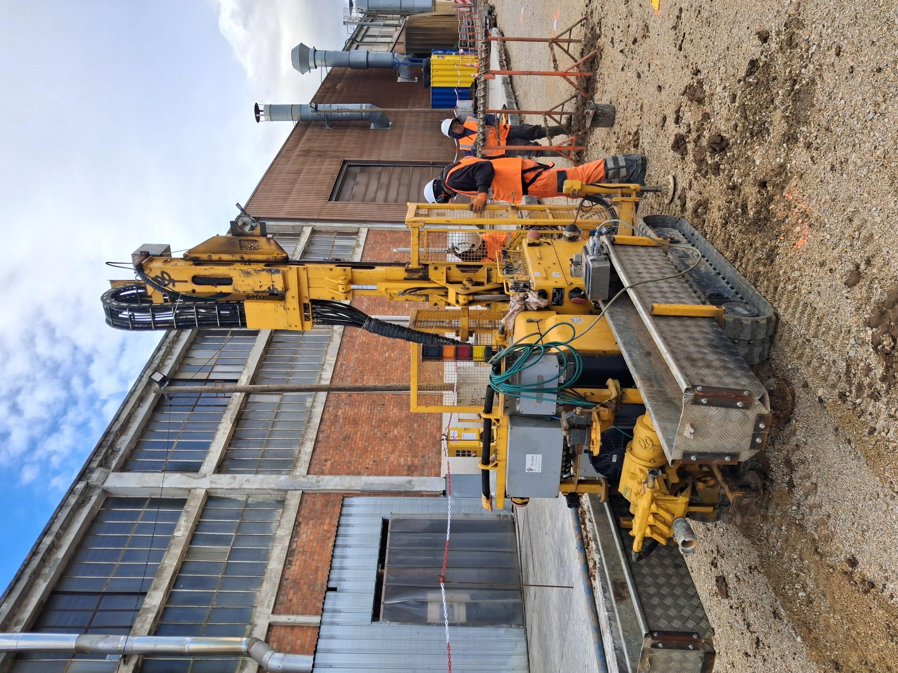
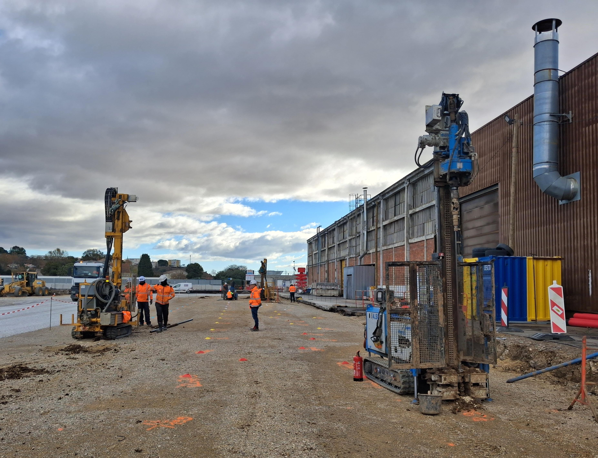
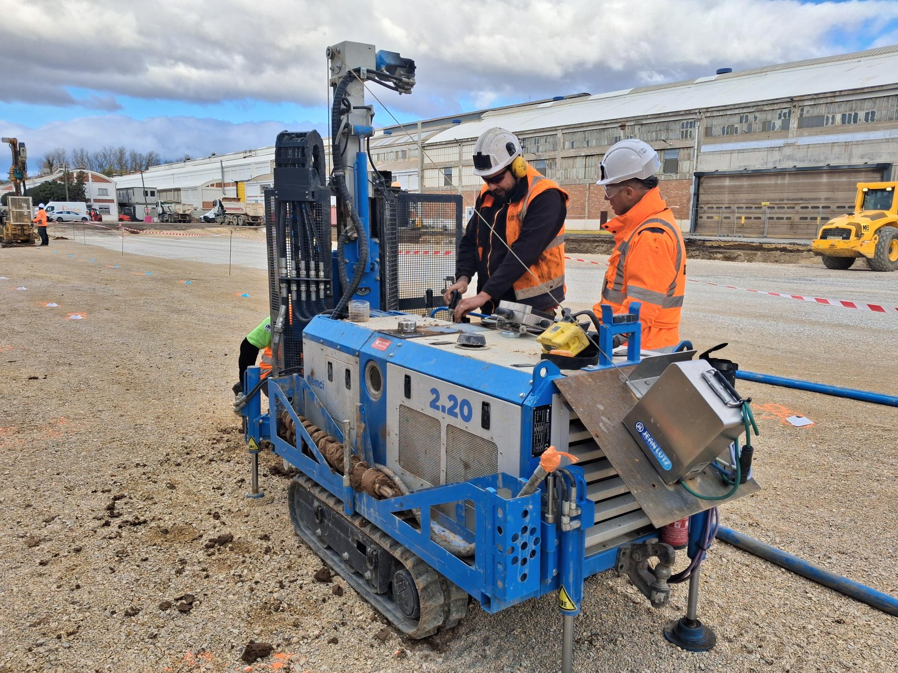
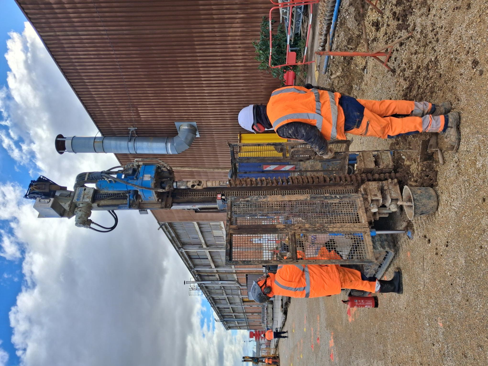
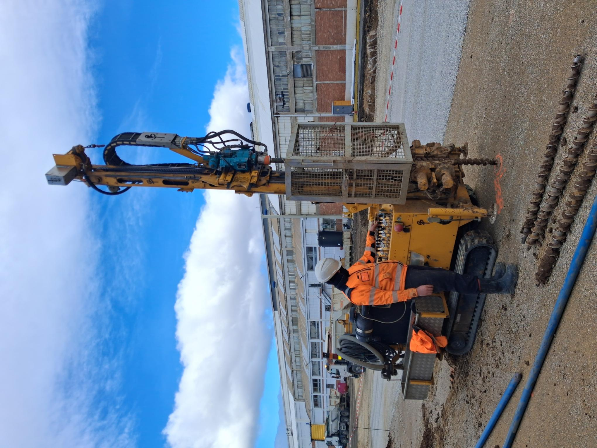
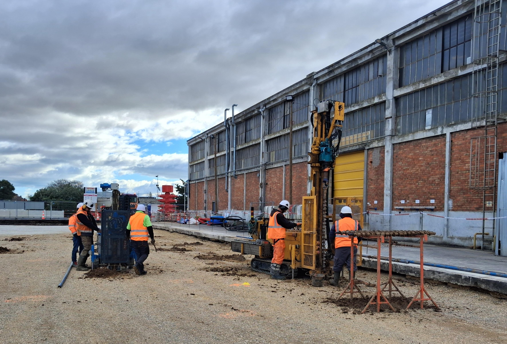
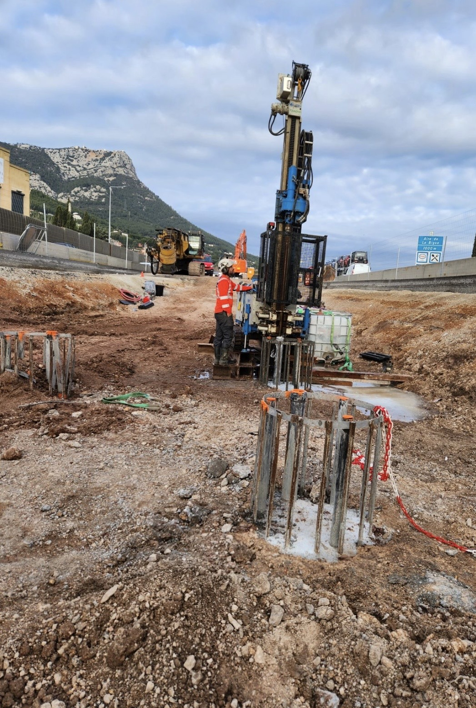
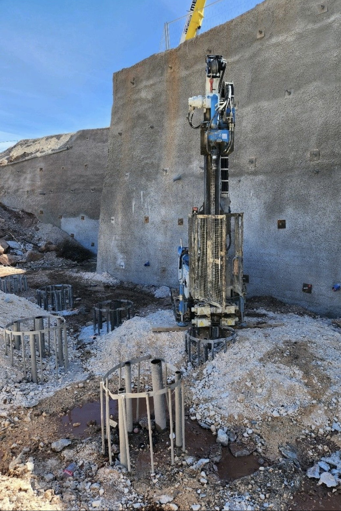
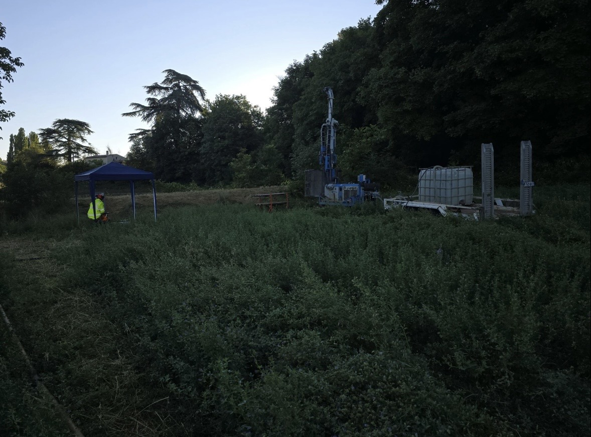

Une immersion visuelle au cœur de nos chantiers, de nos défis techniques et de la diversité de nos moyens d'investigation.
Nos équipes interviennent sur des chantiers d'envergure nationale et régionale :
• Grand Paris Express (Lignes 4, 12, 14, 15, 18 et 19)
• Métro de Toulouse (Ligne C)
• Métro de Rennes (Ligne B)
• Base Navale de Toulon et projets industriels majeurs à Ollioules (GPU).













